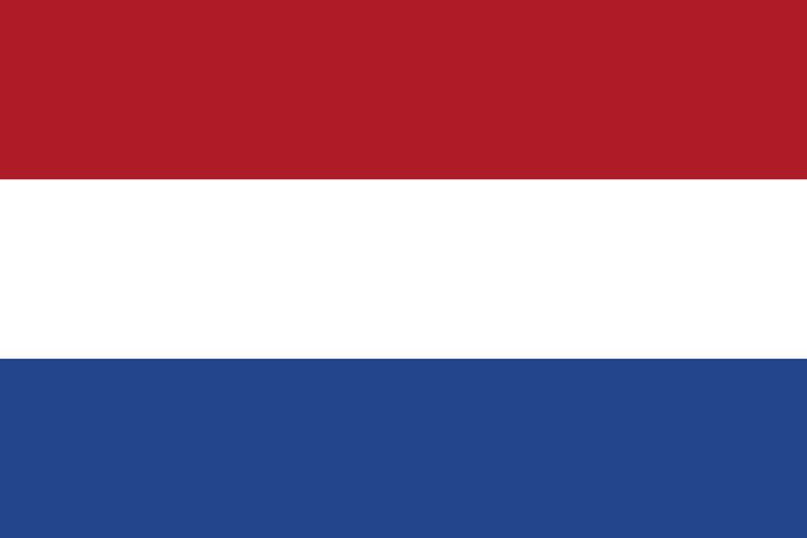
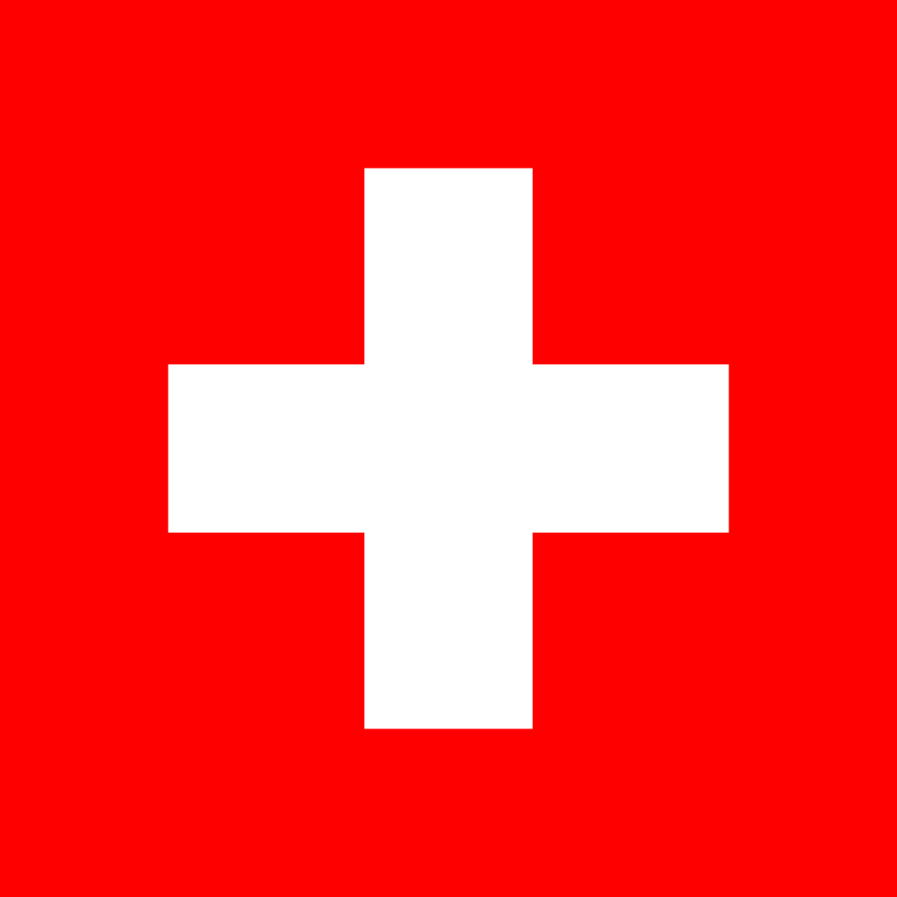

#1  Findland
Findland
Finland ranks first again. The country has an advanced economy and extensive welfare state, resulting in widespread prosperity and a high per capita income. Finland is a top performer in numerous metrics of national performance, including education, economic competitiveness, civil liberties, quality of life, and human development.
#2  Denmark
Denmark
Denmark up one spot from 2018. The country enjoys a high standard of living and ranks as having the world's highest social mobility, a high level of income equality, has the lowest perceived level of corruption in the world, has one of the world's highest per capita incomes, and one of the world's highest personal income tax rates.
#3  Norway
Norway
Norway down one spot from 2018. The country has a universal health care and a comprehensive social security system -- values are rooted in egalitarian ideals. Norway has the fourth-highest per capita income in the world on the World Bank list. Norway has had the highest Human Development Index ranking in the world since 2009.
#4  Iceland
Iceland
Iceland holds 4th place again this year. The country has a market economy with relatively low taxes. It maintains a welfare system that provides universal health care and tertiary education for its citizens. Iceland ranks high in economic, democratic, social stability, and equality, currently ranking third in the world by median wealth per adult.
#5  Netherlands
The Netherlands up one spot from 2018. The country has a tradition of pillarisation and a record of social tolerance. Its mixed-market advanced economy had the thirteenth-highest per capita income globally. The Netherlands ranks among the highest in international indexes of press freedom, economic freedom, human development and quality of life
#6  Switzerland
Switzerland down one spot from 2018. The sovereign state is one of the most developed countries in the world, with the highest nominal wealth per adult and the eighth-highest per capita gross domestic product. It ranks at or near the top in several international metrics, including economic competitiveness and human development.
#7  Sweden
Sweden
Sweden up two spots from 2018. The country provides universal health care and tertiary education for its citizens. It has the world's eleventh-highest per capita income and ranks highly in quality of life, health, education, protection of civil liberties, economic competitiveness, equality, gender equality, prosperity and human development.
#8  New Zealand
New Zealand
New Zealand maintained its position of 8th place again this year. A developed country, New Zealand ranks highly in international comparisons of national performance, such as quality of life, health, education, protection of civil liberties, and economic freedom.
#9  Canada
Canada
Canada down two spots from 2018. The country ranks among the highest in international measurements of government transparency, civil liberties, quality of life, economic freedom, and education. It is one of the world's most ethnically diverse and multicultural nations, the product of large-scale immigration from many other countries.
#10  Austria
Austria
Austria up two spots from 2018. The country is a parliamentary representative democracy with a directly elected Federal President. Major urban areas of Austria consistently rank in the top 20 richest countries in the world by GDP per capita terms. In 2018, Austria was ranked 20th in the world for its Human Development Index.
 So... Where's the US?
So... Where's the US?